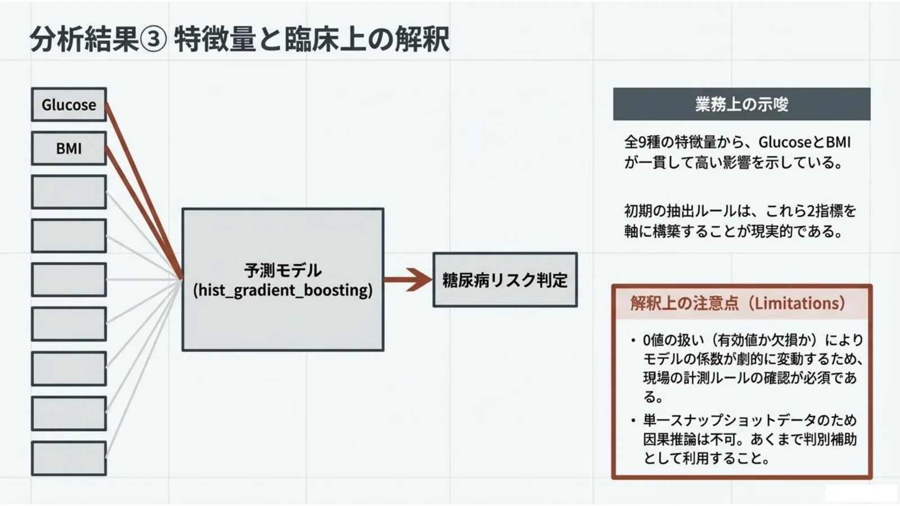
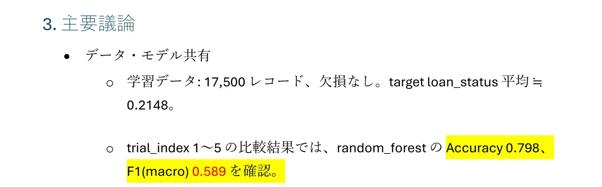
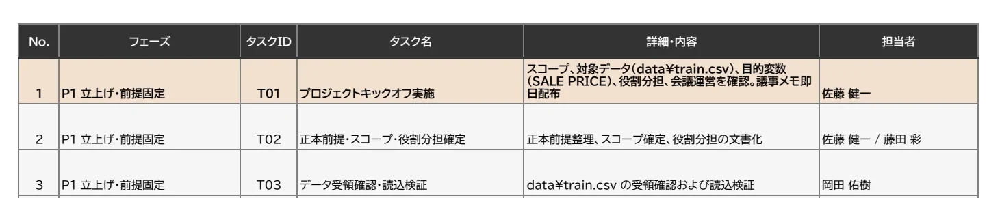
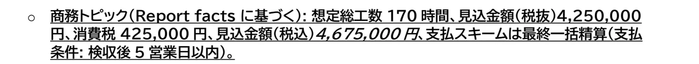
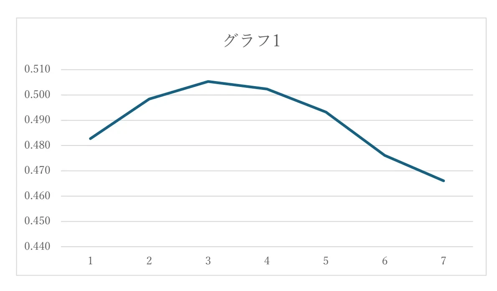
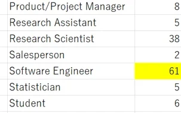
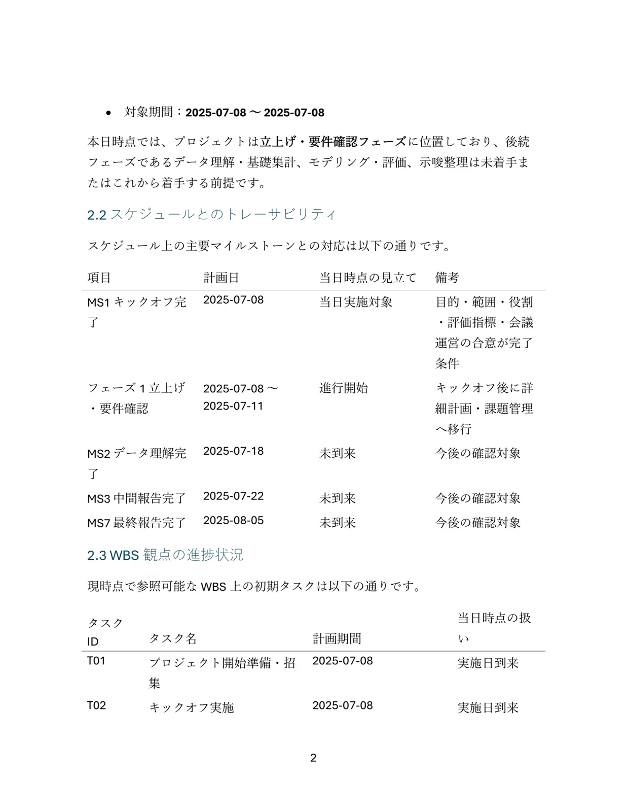
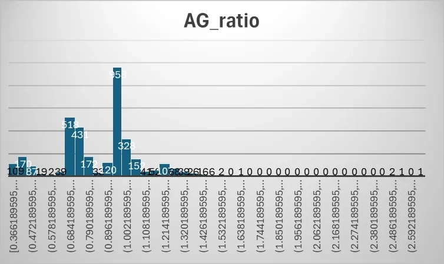
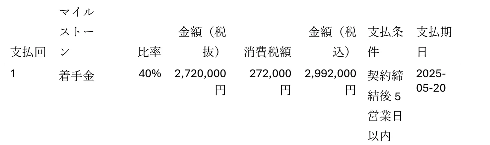
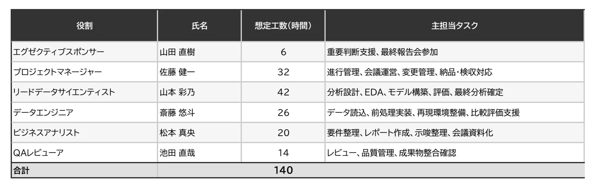

Competition
煩雑な社内ドライブを、Agentic RAGで調べ切る
SIGNATE で開催された AI Engineering Challenge ～煩雑な社内ドライブをハックせよ～ への参加作品。架空のデータ分析コンサルティング会社「データアステル社」の社内AI担当として、共有ドライブに溜まった案件資料から、社内の質問に根拠つきで答えるRAGシステムを作ることが課題だった。渡された質問100問に回答し、どれだけ正しく答えられたかをスコアで競った。
何が難しいのか
共有ドライブの資料は形式も粒度もそろっておらず、必要な情報が複数の場所に散らばっている。答えは本文だけでなく、埋め込み画像やグラフ、セルの塗り色、図の中の位置関係、パスワードのかかった契約書にも置かれている。さらに、特定の質問や手元のデータに合わせ込むのではなく、 未知の案件や資料が追加されても同じ方針で答えられるパイプラインであることが求められた。
渡されたもの
| もの | 中身 |
|---|---|
| 共有ドライブ | プロジェクト/（10案件 × 工程別7フォルダ）と 社内管理/（社内用語集などの横断参照4文書）。docx / xlsx / pptx / pdf / ipynb / 画像 / コードなど403ファイル |
| 質問 | 100問。単一資料の読解のほか、複数資料・複数案件にまたがる検索・照合・集計、社内略称を含む質問がある |
Implementation
前処理で読める形にし、エージェントには探させる
質問が来る前に、全ファイルをテキスト・表・画像の読み取り結果へ変換して索引を作っておく。質問が来たら、LLMがツールを選んで資料を調べ、回答を確定するまでループする。ツールと、そのループの中身は自前で実装した。
システム構成
質問が来る前に一度だけ行う前処理と、質問ごとに回るエージェントの2つに分かれる。エージェントのループの枠組みには LangGraph を使う。Gemini API は Google の公式SDK（google-genai）で直接呼び、ツールの定義と実行は自前のコード（ToolBox）で行う。
実線の枠は自前のコード、破線の枠は外部のサービス・CLI。Web UI は同じエージェント（LangGraph のループ）で新しい質問を実行し、記録を同じ形式で残す。
全体の流れ
| 段階 | やること | 実装 |
|---|---|---|
| 前処理 | 共有ドライブの全ファイルを、書式の注記つきテキスト・表・画像の読み取り結果に変換し、検索索引を作って artifacts/ に保存する。質問が来る前に1回だけ行う（次の節） | submission/pipeline.py |
| エージェント | 1問ごとに、LLMとツールのループで資料を調べて回答を確定する。一括実行は8並列 | app/agent/ · app/run/ |
| 整形・書き出し | 回答を決定的な処理で整え、CSVの形式とトークン数を検証して書き出す | app/answer/ · app/submit/ |
前処理でやっていること
前処理は7段からなり、rag_cli.py preprocess で順に実行する。OCRはそのうちの1段で、前処理のコードの半分以上は、Office文書やPDFから書式・表・グラフ・ページ位置を取り出す「抽出」が占めている。どの段でも、失敗があればその場で前処理を止める。
| 段 | やること | 今回の結果 | 実装 |
|---|---|---|---|
| 1. 登録 | 全ファイルを列挙し、内容のmd5で新規・変更・削除を判定する。パスの位置から案件と工程を決める | 403ファイル | app/corpus/ |
| 2. 抽出 | 形式ごとの抽出器で、書式の注記つきMarkdownに変換する（下の表）。埋め込み画像は別ファイルに切り出し、docxのページ位置もここで確定させる。最後に、全ファイルの台帳と、systemプロンプトに入れるドライブのツリーを作り、版違いを相互にリンクする | 403文書、抽出エラー0 | app/extract/ |
| 3. 健全性の確認 | 抽出エラー、本文が空の文書、抽出されていないファイル、zipの中の画像の数と切り出した数の食い違いを全件洗い出す | いずれも0件 | app/extract/health.py |
| 4. OCR | 画像ファイル、文書に埋め込まれた画像、テキスト層のないPDFページを Codex CLI で読み取る | 253枚（PDFページ131・埋め込み画像68・画像ファイル54） | app/ocr/ |
| 5. OCRの統合 | 読み取り結果を、元の文書の該当ページに書き足す。そのあと健全性の確認をもう一度行い、書き足し漏れがないかも調べる | 84文書に反映 | app/ocr/runner.py |
| 6. 索引 | ページ・シート・スライドを単位にチャンクへ分け、BM25と密ベクトルの索引を作る | 10,918チャンク | app/index/ |
| 7. 状態の記録 | 全段が成功した時点の、各ファイルのmd5・サイズ・更新日時を artifacts/preprocess_state.json に書く。次回 --skip-processed を付けて実行すると、変わっていないファイルを飛ばす | 403ファイル | submission/storage.py |
形式ごとに取り出しているもの
書式は **太字**・==ハイライト=={色名}・[c:RRGGBB]文字色[/c]・値 {fill:#RRGGBB 色名}（セルの塗り）・{fml:=式}（数式）のような記法で本文に埋める。記法は app/extract/markup.py の1か所で定義し、どの形式でも同じものを使う。
| 形式 | ファイル数 | 取り出すもの |
|---|---|---|
| docx | 46 | 段落（見出しは # つき）・表・コメント（対象の箇所と作成者つき）。太字・斜体・下線・取消線・ハイライト・文字色を記法で埋める。本文の先頭に、確定させたページ情報（全何ページか、各ページにある見出し）を置く |
| xlsx | 20 | シートごとの表（行番号と列記号つき）。セルの塗り色・文字色・太字・下線・数式を記法で埋める。条件付き書式の規則、ピボットテーブルの定義、非表示のシートであること、画像だけが貼られたシートであることも書く。200行または60列を超えるシートは先頭25行だけにし、全量は run_python で読むよう書き添える |
| pptx | 25 | スライドごとのテキスト・表・ノート。図形の塗り色を記法で埋める。グループ化された図形は中まで辿る |
| 28 | ページごとのテキスト。文字色・ハイライト・太字・斜体・下線を1文字ずつ調べて記法で埋める。文字がほとんどなく画像を含むページは、スキャンページとしてOCRに回す | |
| ipynb | 11 | セルごとのソースと出力（標準出力・実行結果・エラー）。出力の図と、Markdownセルに埋め込まれた画像は、別ファイルに切り出してOCRに回す |
| csv / tsv | 31 | 表として整形する。200行を超えるものは先頭25行と列名だけにし、全量は run_python で読むよう書き添える |
| 画像 | 54 | 寸法とmd5だけを記録し、中身はOCRで読む |
| テキスト | 188 | py・md・json・toml・txt・lock。文字コードを判定して全文を入れる（40万字まで） |
| 共通 | — | docx・xlsx・pptx に埋め込まれたグラフは、ファイル内に保存された値から表に復元する。EMF形式の画像として貼られた表は、中身を解析してセルの値を取り出す。パスワード付きのファイルは中身を読まずに印だけを付け、回答時に decrypt で開くよう本文に書いておく |
エージェントのループ
LangGraph で「LLMを呼ぶノード」と「ツールを実行するノード」を往復させている。
LLMは毎ターン、それまでの会話全体と9つのツールの定義を受け取り、次に呼ぶツールを選ぶ。
submit_answer が呼ばれて回答が確定するまで、これを繰り返す。
| 仕組み | 内容 |
|---|---|
| 差し戻し | 前処理OCRの結果を根拠に使ったまま、元画像を確認せずに submit_answer を呼ぶと、確定させずに「元画像を read_image / ask_image で確認してから、やり直す」よう返す |
| 文章だけの返事 | ツールを呼ばずに文章だけを返したら、submit_answer で答えるよう1回だけ促す。それでも文章なら、短い回答らしい場合に限って回答として拾う |
| 記録 | LLMへの送信内容、応答、ツールの引数と戻り値を、切り詰めずに1問1ファイルのJSONLへ書く |
app/agent/graph.py · app/run/chain.py
systemプロンプトの中身
最初の呼び出しで渡すsystemプロンプトは約4万字で、全問で共通。内容を固定しているので、KVキャッシュが効く。入力約494万トークンのうち84%がキャッシュから読まれた。各問の最初の呼び出しでも63%、2回目以降は85%で、共通のsystemプロンプトが問をまたいで再利用されている。
| 部分 | 内容 |
|---|---|
| 回答方針 | 要求された値だけを書く、単位や小数桁は質問文に従う、確信が持てなければ「わかりません」、列挙の順序、抽出条件の書き方など |
| ツールの使い方 | 計算は暗算せず run_python で、会話で見た数値をコードに手写ししない、集計が0件ならまず自分のコードを疑う、書式の注記の読み方など |
| ドライブのツリー | 全403ファイルのパスと、形式・ページ数・シート名・版違いなどの注記 |
| 横断参照の文書 | 社内管理/ の文書の全文（用語集・パスワード導出規則・決裁基準など） |
app/agent/prompts.py
用意したツール
ツールは前処理で作った抽出結果を見せるだけで、判断は持たない。どのファイルのどこを見るかを決めるのはLLMだ。見出しの右の数字は、100問の実行で呼ばれた回数。
search ハイブリッド検索
- 役割
- 共有ドライブ全体から、質問に関係しそうな資料を探す。
- 引数
query（必須）、k（既定8・最大20）、project/category/filetype（絞り込み）- 実装
- SudachiPy（mode C）で分かち書きしたBM25と、
ruri-v3-310mの密ベクトル検索を、それぞれの順位からRRF（k=60）で融合する。上位20件を日本語cross-encoderで並べ直して上位k件を返す。 - 返すもの
- ファイルパス・ページ・本文の抜粋（260字）。前処理OCRの結果に当たった場合は、元画像の確認待ちとして記録する。
app/agent/tools.py ToolBox.search · app/index/search.py · app/index/rerank.py
grep 正規表現検索
- 役割
- 抽出済みの全文から、識別子・数値・書式の注記（
==ハイライト=={色}など）を漏れなく拾う。 - 引数
pattern（必須）、project、path_glob、max_hits（既定30・最大100）- 実装
- カタログの全文書をページ単位で走査し、マッチした行を集める。上限に達したら、パターンを絞るよう促す一文を付けて返す。
- 返すもの
- ファイルパス・ページ・マッチした行。
app/agent/tools.py ToolBox.grep
read 抽出済みの内容を読む
- 役割
- ファイルの中身を、書式の注記つきMarkdownとして読む。
- 引数
relpath（必須）、pages（例:'1-5'、'10-'）- 実装
- 1回の戻りを4,000トークンに抑える。収まらないページは先頭だけを返し、読めなかったページの目次と、そこにあるもの（EMF表・グラフ・コメントなど）を添える。
- 返すもの
- ページ範囲つきの本文と、未表示ページの目次。
app/agent/tools.py ToolBox.read
read_image 画像を見る
- 役割
- 図・グラフ・スキャンページを、画像のまま見る。
- 引数
relpath/page（PDF）/asset_id（埋め込み画像）、region（'x0,y0,x1,y1'の割合で部分拡大）- 実装
- PDFは pypdfium2 でページを描画し、
region指定時は3倍の解像度で切り出す。長辺1,568pxに縮めてJPEGで返す。同時に、設定した画像読み取りエンジン（既定は Claude Code）にも同じ画像と元の質問を渡し、その読み取り結果を添える。 - 返すもの
- 画像そのものと、画像読み取りエンジンの読み取り結果。
app/agent/tools.py ToolBox.read_image · app/ocr/ask.py
ask_image 画像に質問する
- 役割
- 図の中の位置関係・並び・矢印の指す先など、見ただけでは判断しにくいことを、画像専用のモデルに確かめる。
- 引数
question（必須）、relpath/asset_id/page/region- 実装
- 位置・方向・包含・隣接などの空間関係を問うときは、範囲内の候補を該当・非該当にかかわらず全件列挙させ、候補ごとに関係を分類させる専用のJSONスキーマを使う。それ以外は「回答・根拠・確信の有無」を返す汎用のスキーマ。結果は画像のmd5・質問・エンジンの組でキャッシュする。
- 返すもの
- 構造化された回答（空間関係なら候補の一覧と分類）。
app/agent/tools.py ToolBox.ask_image · app/ocr/ask.py ask() / ask_spatial()
run_python コードを実行する
- 役割
- 集計・計算・条件抽出・全案件を横断した走査を、会話ではなくコードでやる。
- 引数
code（必須）- 実装
- 別プロセスのPythonで実行する。APIキーなどの環境変数は渡さず、コーパスへの書き込みは実行後に元へ戻す。120秒でタイムアウト、出力は12,000字まで。コーパス用のヘルパを最初から読み込んである:
projects()・files(project=, category=, pattern=)（対象の列挙）、read_text(rel)（抽出済みテキスト。plain=Trueで書式の注記を外す）、tables(rel)（文書中の表を{header, rows}で）、read_csv/read_excel。numpy・pandas・scipy・openpyxl・Pillow などが使える。 - 返すもの
- 標準出力。
app/agent/tools.py ToolBox.run_python · app/agent/sandbox.py
diff 版を比較する
- 役割
- 版違い（
_v1/_old/_finalなど）の2ファイルの差分を取る。 - 引数
relpath_a（旧版）、relpath_b（新版）- 実装
- 抽出テキストの unified diff（
difflib）。画像はmd5で同一かを判定し、差し替わった画像だけを画像読み取りエンジンに2枚並べて比較させる。 - 返すもの
- 差分と、差し替わった画像の比較結果。
app/agent/tools.py ToolBox.diff
decrypt 暗号化ファイルを開く
- 役割
- パスワードで保護されたOfficeファイルを復号し、中身を読めるようにする。
- 引数
relpath（必須）、passwords（候補のリスト、必須）- 実装
- msoffcrypto-tool で候補を順に試す。成功したら通常と同じ抽出処理にかけ、以後は
readで読めるようにする。候補の作り方はツール側に持たず、エージェントが社内規定のパスワード導出規則から組み立てて渡す。 - 返すもの
- 成否と、成功した場合は本文の冒頭。
app/agent/tools.py ToolBox.decrypt · app/extract/encrypted.py
submit_answer 回答を確定する
- 役割
- 最終回答を確定し、ループを終える。
- 引数
answer（必須）、confidence（0〜1、必須）、evidence（根拠にしたファイル）- 実装
- ToolBox にメソッドはなく、ループ側で受け取る。前処理OCRの結果を根拠に使ったまま元画像を確認していなければ、確定させずに差し戻し、確認すべき資料を示す。確定した回答は、LLMを使わない決定的な処理で整える（空・エラー・確信度0.35未満は「わかりません」、改行やタグの除去、トークン数の検証）。
- 返すもの
- —（ここでループが終わる）
app/agent/graph.py · app/answer/finalize.py
ツールの作り方
LangChain のツール機能（@tool など）やエージェント機能は使わず、ツールの定義と実装を自前で書いた。
LangGraph は、LLMとツールを往復させるループの枠組みとしてだけ使っている。
| 部分 | 書き方 |
|---|---|
| 定義 | TOOL_DEFS に、ツールごとの名前・説明文・引数のJSON Schemaを辞書で並べる。LLMが読むのはこの説明文なので、使いどころや注意もここに書く |
| 実装 | ToolBox クラスに、ツールと同じ名前のメソッドとして書く。ToolBox.call() が名前でメソッドを呼び、例外は落とさず「[エラー] …」という文字列にしてLLMへ返す |
| LLMへの渡し方 | TOOL_DEFS を Google の公式SDK（google-genai）の FunctionDeclaration に変換し、毎ターンのリクエストに添える |
| 差し替え | LLMは抽象クラス LLMBackend 越しに扱う。ループとツールは応答の形しか知らないので、Gemini以外のモデルにも替えられる |
app/agent/tools.py · app/agent/backend.py · app/agent/graph.py
使ったモデルとライブラリ
| 役割 | 使ったもの |
|---|---|
| 回答（エージェント） | Gemini gemini-3.7-flash（temperature 0・シード固定）。100問の実行ログに応答元として記録されていたモデル名は gemini-3.7-flash と gemini-3.6-flash の2つで、指定したのは前者だけ |
| 回答中の画像の読み取り | Claude Code CLI（fable、effort high）。Web UI から Codex や Gemini にも切り替えられる |
| 前処理のOCR | Codex CLI（gpt-5.6-sol、reasoning effort xhigh） |
| 検索 | cl-nagoya/ruri-v3-310m（密ベクトル）、hotchpotch/japanese-reranker-cross-encoder-small-v1（リランク）、SudachiPy・rank-bm25 |
| 文書の読み取り | python-docx・openpyxl・python-pptx・pypdfium2・msoffcrypto-tool。docxのページ位置は Microsoft Word（無ければ LibreOffice）で組版して確定 |
| ループと実行環境 | LangGraph、Python 3.13、uv |
同じ経路を、自分の質問で走らせる
リポジトリの Web UI（Streamlit）から、その場で1問を実行できる。ツールを呼ぶたびに経路が伸びていく様子と、このページと同じ形式の記録が残る。前処理済みのデータと APIキーが要るので、手順はリポジトリの README を参照のこと。
Corpus
探索先は、案件フォルダと横断参照フォルダの2つ
読み取り対象は share/共有ドライブ/ の下だけ。ここは プロジェクト/ と 社内管理/ の2つに分かれていて、この分け方がそのまま検索フィルタとプロンプト構成に効いている。
フォルダ構成
エージェントが探索するのは share/共有ドライブ/ の下だけで、中身は大きく2つに分かれている。
プロジェクト/ には案件（顧客企業）ごとのフォルダが10個あり、どの案件も提案から報告書までの工程ごとに、同じ7つのフォルダを持つ。社内管理/ には、どの案件にも属さない社内共通の資料（用語集・社内規定・決裁基準・座席表）が置かれている。
全403ファイル（案件フォルダ399、社内管理4）。案件名は架空の企業。
案件フォルダ — 番号が工程の順序になっている
10案件すべてが 00.提案 から 06.報告書 までの同じ7フォルダを持つ。番号は装飾ではなく案件の進行順で、質問の「提案時の見込みと最終請求の差額は」のような問いは、この番号の両端を突き合わせることになる。フォルダ名の位置から project / category を導出しているので、検索の絞り込みにもサンドボックスの files(project=, category=) にもそのまま使える。
横断参照フォルダ — systemプロンプトに全文で常駐する
社内管理/ の4文書は案件に属さず、どの質問からも参照されうる。小さいので、検索させずに毎回systemプロンプトへ全文で載せている。略語の展開やパスワードの導出規則は「検索して見つける」ものではなく、調査を始める前から手元にあるべき前提であるため。
案件 × 工程のファイル分布
04.分析 に偏っているのは、分析プロジェクト一式（src/・notebooks/・reports/figures/）がまるごと置かれているため。ここだけはコードとして読む必要がある。
素直に読めないファイルがどこにあるか
前処理では、普通にテキストを取り出すだけでは中身を取りこぼすファイル（埋め込み画像がある、スキャンしたページを含む、暗号化されているなど）を見分け、ツリーの各ファイルに注記として書き添えている。ツリーはsystemプロンプトに入るので、エージェントはファイルを開く前から「このxlsxにはピボットがある」「このpdfはスキャンだ」と分かる。
ツリー
実際にsystemプロンプトへ渡しているツリーと同じ構造。フォルダをクリックすると開閉する。
Routes
100問が、それぞれどこを通ったか
左の一覧から設問を選ぶと、その問いの探索経路が最初のツール呼び出しから回答の確定まで右に並ぶ。ツール名・引数・返ってきた内容の冒頭・所要秒数は、すべて実行ログそのまま。
主経路の内訳
使われたツールの組み合わせから、その設問を特徴づける経路を1つ割り当てている（強い手掛かりを持つものが優先 — 復号 > 図版照会 > 版比較 > 画像読取 > コード走査 > 全文検索 > 意味検索 > 直読）。
設問一覧
Techniques
答えの出どころへ、どうやって行き着かせたか
難しいのは、文章として書かれていない情報が答えになることだった。セルの塗り色、図の中の位置関係、docxの何ページ目か、パスワードのかかった契約書など。以下は、エージェントが答えを見つけるためにやったこと。設問番号のボタンを押すと、その工夫が実際に効いた経路へ飛ぶ。
GROUP 1 — 入口
「どこを見るか」を検索で当てさせない
ベクトル検索は、質問と資料の言葉が違っていても届くのが利点だが、今回のように資料の置き場所に規則があるなら、規則のほうを先に渡したほうが速くて確実だった。
ドライブ全体のツリーをsystemプロンプトへ常駐させる
- 問題
- 検索から始めると、上位に出た数チャンクの外側が見えない。「全案件で最も〜な案件」のような問いでは、そもそも取りこぼしたことに気づけない。
- 対策
- 形式・ページ数・シート名・列名・版違いの注記を付けた全403ファイルのツリーを前処理で自動生成し、systemプロンプトに組み込む。エージェントは最初のターンから全ファイルの存在と概形を知っている。1問あたりの入力トークンは増えるが、プロンプトの内容は固定してあるので KVキャッシュが効き（実測で入力の84%がキャッシュから読まれた）、結果的にコストは抑えられる。
- 結果
- 100問のうち
searchを呼んだのは1問だけ。残りは最初のツール呼び出しでファイルを名指ししている。
資料の見た目（最終報告.pdf の1ページ）

systemプロンプトのツリー（抜粋）と、最初のツール呼び出し
医療法人社団 蒼樹会 みなみ野女性医療センター/
…
04.分析/
…
reports/
figures/
feature_correlation_heatmap.png [png; 1294x1176; 画像1]
…
06.報告書/
医療法人社団 蒼樹会 みなみ野女性医療センター_最終報告.pdf [pdf; 15ページ; スキャン15p]
① run_python
pdf_rel = '医療法人社団 蒼樹会 みなみ野女性医療センター/06.報告書/医療法人社団 蒼樹会 みなみ野女性医療センター_最終報告.pdf'
txt = read_text(pdf_rel)
app/agent/prompts.py · app/extract/catalog.py → artifacts/catalog/tree.txt
横断参照フォルダの4文書を全文で載せる
- 問題
- 質問文に社内略称が入ると、その略称のまま検索しても本文に出てこない。用語集を引く手順を毎回踏ませるとターンを食う。
- 対策
- 案件に属さない
社内管理/の文書（用語集・決裁基準・パスワード導出規則・座席表）を、トークン予算の範囲で全文プロンプトへ入れる。略称の展開、承認権限の判定、パスワードの組み立てが、調査を始める前に済んでいる状態を作る。 - 結果
- 略称を含む質問でも、展開後の語で直接ファイルに当たれる。復号が要る9問も、規則を読みに行く往復なしでパスワード候補を作れている。
資料の見た目（会議録_2025-04-29.pdf）

systemプロンプトの社内用語集（抜粋）と、最初のツール呼び出し
| 会議録 | MM | Meeting Minutes |
| 黄色ハイライト | YL | Yellow Highlight |
| 赤字 | RED | Red Font |
| 青葉与信マネジメント株式会社 | AYM | 青葉, 青マネ, 与信青葉, AY | AYM を正式 |
設問: AYMのMMにおいて、黄色ハイライトかつREDになっている数値を対象に…
① run_python
files = sorted(glob.glob("プロジェクト/青葉与信マネジメント株式会社/05.会議/会議録/*.pdf"))
app/agent/prompts.py internal_docs_text()
GROUP 2 — 可読化
文章になっていない情報を、検索できる形に落とす
答えがセルの塗り色や図の中にあるとき、素のテキスト抽出では消える。消える前に、テキストと同じ平面へ写しておく必要があった。
書式を本文へ焼き込み、grepで拾えるようにする
- 問題
- 「オレンジにハイライトされている行」「太字・下線・イタリックすべてに該当する箇所」が設問になる。通常のテキスト抽出では色も太字も落ちるため、画像として見るしかなくなる。
- 対策
- 抽出の時点で書式を記法としてテキストに埋める。
**太字**/==ハイライト=={色名}/[c:RRGGBB]文字色[/c]/値 {fill:#RRGGBB 色名}（セル塗り） /{shape-fill:#RRGGBB 色名}/{fml:=式}。色名は淡い色でも基本色名を含める（薄オレンジ→「薄橙」ではなく基本色名を残す）ので、色名でgrepできる。xlsxはテーマ色も解決する。 - 結果
- ガントの塗りや強調セルが、画像を開かずに正規表現で網羅できる。
資料の見た目

前処理後のテキスト（エージェントが読むもの）
| 2 | **1** {fill:#F2E0D0 薄オレンジ} | **P1 立上げ・前提固定** {fill:#F2E0D0 薄オレンジ} | **T01** {fill:#F2E0D0 薄オレンジ} | **プロジェクトキックオフ実施** {fill:#F2E0D0 薄オレンジ} | …
| 3 | 2 | P1 立上げ・前提固定 | T02 | 正本前提・スコープ・役割分担確定 | …
| 4 | 3 | P1 立上げ・前提固定 | T03 | データ受領確認・読込検証 | …
app/extract/markup.py · app/extract/xlsx.py
PDFの書式も、1文字ずつ取り出して焼き込む
- 問題
- PDFから普通にテキストを取り出すと、マーカーや太字は消える。この資料群のうち Word から出力されたPDFでは、太字こそ太字のフォントで描かれていたが、斜体は文字を傾けて描いているだけ、ハイライトは文字の背後の色付き矩形、下線は細い矩形で、「ここは斜体」「ここは下線」という情報はどこにも書かれていなかった。
- 対策
- pypdfium2 で1文字ずつ、文字色・フォントの太さと名前・位置を取り出す。ハイライトは文字の中心が入る塗り矩形の色、下線は文字の下にあって厚みが文字サイズの1/5未満の矩形とみなす。斜体の書体を持たないフォントは文字を傾けて斜体を表すので、文字の変換行列の傾きから判定する。同じ書式が続く範囲をまとめ、Office文書と同じ記法で埋める。
- 結果
- docxとPDFを同じ正規表現で探せる。太字＋下線の行の中で1か所だけ斜体になっている金額や、数値の先頭3桁だけにかかった黄色ハイライト＋赤字を、文字単位で切り出せている。
資料の見た目

前処理後のテキスト（エージェントが読むもの）
o <u>**商務トピック（Report facts に基づく）: 想定総工数 170 時間、見込金額（税抜）4,250,000**</u> <u>**円、消費税 425,000 円、見込金額（税込）**</u><u>***4,675,000 円***</u><u>**、支払スキームは最終一括精算（支払**</u> <u>**条件: 検収後 5 営業日以内）**</u><u>。</u>
app/extract/pdf.py _styled_text() · _underlined_chars() · _char_skew()
セルの値に出てこない情報を、本文に書き出す
- 問題
- openpyxl や pandas はセルの値しか見ない。条件付き書式による塗り、非表示のシート、ピボットテーブルの定義、グラフの元の値は、値を読むだけでは存在ごと消える。グラフだけが貼られたシートは「空シート」に見え、「該当なし」と誤答しやすい。
- 対策
- 条件付き書式は、規則ごとに範囲・条件・塗り色を書く（例:
範囲 L2:L31: セルの値 に 完了 を含む → 塗り {fill:#C6EFCE 薄緑}）。大きなシートで表が切り詰められても残るよう、規則は表より前に置く。非表示のシートは見出しに「（hidden）」と付ける。ピボットテーブルは行・列・フィルタ・値のフィールドと集計方法を書く。グラフは、ファイル内に保存されている系列の値から表を復元し、軸のタイトルも添える。docxに埋め込まれたグラフも同じ扱い。 - 結果
- 条件付き書式17シート、ピボットテーブル10個、グラフ11個を本文に書き出した。目盛りが0.01刻みで見た目からは読めないグラフの値も、保存値から小数第5位まで答えられる。
資料の見た目

前処理後のテキスト（エージェントが読むもの）
### 埋め込みグラフ (lineChart): グラフ1 [word/charts/chart1.xml] - x軸: カテゴリ値は埋め込まれていない。列見出しの 1,2,3… は描画上のx軸の位置（1始まり）を表す | 系列 | 1 | 2 | 3 | 4 | 5 | 6 | 7 | |---|---|---|---|---|---|---|---| | 系列1 | 0.48274573517465574 | 0.49839676113360443 | 0.50533551554828282 | 0.50239218877136205 | 0.49327346938775768 | 0.47610976594027604 | 0.46606012658227802 |
app/extract/xlsx.py · app/extract/ooxml_chart.py
EMFで埋め込まれた表を、バイナリから直接読む
- 問題
- Office文書では表やピボットが EMF画像オブジェクトとして貼り込まれていることがある。シートXMLにセル値が無いので、探しても見つからず「該当なし」と誤答しやすい。実データでは docx / xlsx / pptx の3形式すべてに存在した。
- 対策
- EMFのレコード列を決定的に解析する。
EMR_EXTTEXTOUTWから参照点付きの文字列、EMR_CREATEBRUSHINDIRECT/EMR_SELECTOBJECT/EMR_BITBLTから塗り矩形を取り、座標で表に組み直す。以前はこの手順をプロンプトに散文で書いてLLMにバイナリを読ませていたが、不安定で高コストだった。解析できなければPNGへラスタライズして画像経路へ落とす。 - 結果
- 画像として埋まっていた表のセル値が、他の表と同じ
tables(rel)で取れる。
資料の見た目

前処理後のテキスト（エージェントが読むもの）
### 埋め込みEMFオブジェクト: image1.emf (テキスト1933件, 塗り6件) | Gender | target | Age | Profession | 個数 / id | |---|---|---|---|---| … | | | | Research Scientist | 38 | | | | | Salesperson | 2 | | | | | Software Engineer | 61 | | | | | Statistician | 5 | | | | | Student | 6 | … 塗り分け: #C0E6F5 薄水色 → Gender, target, Age, Profession, 個数 / id; #FFFF00 黄 → 61
app/extract/emf.py · app/extract/ooxml_chart.py
docxのページ位置を、組版して確定させる
- 問題
- 「この見出しがあるのは何ページか」に答えるには、docxが本来持っていないページ境界が要る。docxは組版してはじめてページが決まる。AIで生成されたdocx文書は、wordで一度も開かれておらず、改ページの情報が含まれていない。
- 対策
- 次の手順で改ページを確定させる。① Wordが保存時に書き込む改ページ記録
w:lastRenderedPageBreakがあればそれを使う。② 無ければ一時コピーをWordで開いて改ページ記録を読み戻す。 - 結果
- 確定したページ情報は抽出テキストの先頭に
[ページ情報]行として入る。判定不能と書かれた文書のページを問われた場合は、推測せず「わかりません」と答える規約にしている。
資料の見た目

前処理後のテキスト（エージェントが読むもの）
[ページ情報] 全8ページ（この文書はページ設定を持たないため、A4・余白25.4,25.4,25.4,25.4mm を仮定して組版した結果。用紙設定が違えばページ数も変わる） p1: 分析進捗報告書 / 1. 報告サマリー / 2. 進捗状況 / 2.1 チェックポイント時点の全体進捗 p2: 2.2 スケジュールとのトレーサビリティ / 2.3 WBS観点の進捗状況 p3: 2.4 タスク件数サマリ / 3. 主要な分析結果 / 3.1 現時点で確認できる分析上の主要所見 / 3.2 分析前提として重要な確認事項 p4: 3.3 現時点での暫定的な示唆 / 4. データ品質と実装状況 / 4.1 データ品質の既知情報 …
app/extract/pagemap.py · app/extract/word_paginate.ps1
OCRは質問が来る前に焼き切る
- 問題
- 図・スキャンPDF・埋め込み画像を回答中に読むと、1問の時間予算をOCRに食われる。同じ図を複数の設問が参照するので無駄も出る。
- 対策
- 前処理で3系統（直置き画像・Office/notebookの埋め込み画像・テキスト層が空のPDFページ）を列挙し、画像md5をキーにキャッシュしながら並列で読み切って本文へ統合する。EMFとして決定的に解析できたものは対象外。失敗は空を返して次回リトライされる冪等な作り。
- 結果
- 回答時の画像アクセスは「確認」に用途が絞られ、探索の時間予算から外れる。
資料の見た目

前処理後のテキスト（エージェントが読むもの）
[画像読み取り] image1.png [画像種別: グラフ] **[c:濃い灰色]AG_ratio[/c]** [図の説明] 種類：縦棒グラフ（ヒストグラム状）。 … 棒：左から44本。0以外の棒は濃い青緑色で塗られている。0の棒には高さのある塗りは見えない。 データラベル（左から）：[c:黒]109[/c]、[c:白]170[/c]、[c:黒]8[/c]、[c:黒]4[/c]、[c:黒]92[/c]、[c:黒]39[/c]、[c:白]518[/c]、[c:白]431[/c]、[c:白]172[/c]、[c:黒]34[/c]、[c:黒]20[/c]、[c:白]958[/c]、… [注: 読み取りに不確かな箇所あり]
app/ocr/targets.py · app/ocr/runner.py · app/ocr/cache.py
GROUP 3 — 検証
出どころが確かめられるまで、提出させない
数えるのも計算するのも、会話ではなくコードにやらせる
- 問題
- 全案件横断の質問を案件ごとに読んでいくとターンが尽きる。さらに、会話に流れてきた表をコードへ手写しすると、拾い漏れても誰も気づかない。
- 対策
- エージェントが書いた Python コードは、資料を読むことしかできない環境（サンドボックス）で動かす。この環境には、資料を扱う関数をあらかじめ用意しておく。
projects()で案件の一覧、files(project=, category=, pattern=)で条件に合うファイルの一覧が取れ、read_text(rel)で前処理済みのテキスト（書式の注記つき）を、tables(rel)で文書中の表を見出しと行に分けて受け取れる。APIキーなどの環境変数は渡さない。あわせてプロンプトで、「会話で見た数値をコードに書き写さない」「集計したら件数と内訳を表示して確かめる」「結果が0件ならまず自分のコードを疑う」と指示している。 - 結果
- 96問が
run_pythonを使い、79問はこれが最初の一手だった。10案件の横断集計が1回のコード実行で閉じる。
資料の見た目（白峰信用リスク評価の契約書）

run_python のコードと出力（抜粋）
for proj in projects():
c_files = files(project=proj, category="契約") + files(project=proj, category="提案")
for f in c_files:
txt = read_text(f, plain=True)
if "着手金" in txt:
lines = [line.strip() for line in txt.split('\n') if "着手金" in line]
…
>>>
Project: 京橋信用ソリューションズ株式会社
Deposit Found: True
Details: [.../01.契約/契約書.docx]: | 第1回 | 着手金 | 50% | 2,625,000円 | …
Project: 医療法人社団 恒一会 かえで総合病院
Deposit Found: False
…
Project: 白峰信用リスク評価株式会社
Deposit Found: True
Details: [.../01.契約/契約書.docx]: | 1 | 着手金 | 40% | 2,720,000円 | …
Project: 青葉与信マネジメント株式会社
Deposit Found: True
Details: [.../01.契約/契約書.docx]: | 1 | 着手金 | 50% | 契約締結後5営業日以内 | 2,100,000円 | …
app/agent/sandbox.py · app/agent/prompts.py
パスワードはコードに書かず、規則から導出させる
- 問題
- 暗号化された契約書が中身ごと読めない。かといって導出済みのパスワードをコードに埋め込むと、配布物に秘密が残る。
- 対策
- 復号モジュールは「渡された候補を順に試す」だけを担当し、候補の作り方は持たない。エージェント側が横断参照フォルダのパスワード導出規則を読み、規則に沿って候補を組み立てて
decryptへ渡す。 - 結果
- 9問がこの経路を通っている。規則が変わっても、変えるのは資料側だけで済む。
資料の見た目（復号後）

導出規則と、decrypt の呼び出し（抜粋）
社内管理/データアステル社内規定_パスワード導出規則.docx
DA-[案件略号]-[開始年月日8桁]-[拡張子コード]
社内管理/社内用語集.docx
| 医療法人社団 恒一会 かえで総合病院 | KAEDE | かえで, 恒一会, 楓病院, 楓 | KAEDE を正式 |
decrypt(relpath="医療法人社団 恒一会 かえで総合病院/02.計画/スケジュール.xlsx",
passwords=["DA-KAEDE-20250902-xlsx", "DA-KAEDE-20250902-XLSX", "kaede20250902"])
→ [成功] パスワードが一致しました。以後 read(…/スケジュール.xlsx) で全文を読めます。
app/extract/encrypted.py · app/agent/tools.py
版違いを走査時に相互リンクしておく
- 問題
- 「old版と最新版を比較して実質的な変更を挙げよ」に答えるには、まず対になるファイルを見つける必要がある。命名は
_v1_old_r2_finalと揺れる。 - 対策
- 走査時に版を示す接尾辞を落として正規化キーを作り、同じキーのファイルを
version_peersとして相互リンクする。ツリーにも「版違い: 〜」と併記されるので、エージェントは比較対象を探さずに済む。差分はdiffツールで取り、画像はmd5が同じなら中身も同じとみなして、異なるものだけ見比べる。 - 結果
- 19ファイルが版違いとして紐づいた。版を比べる設問は、いずれも最初のツール呼び出しで両方のパスを指定している。Q22 では、ノートブックに貼られた統計表の画像が差し替わっていることを
diffが見つけ、2枚を比べて class 列の統計が加わったことを示した。
ツリーの注記と diff の出力（抜粋）
01_eda.ipynb [ipynb; 22セル; 画像7; 版違い: 01_eda_old.ipynb]
01_eda_old.ipynb [ipynb; 22セル; 画像7; 版違い: 01_eda.ipynb]
diff("…/01_eda_old.ipynb", "…/01_eda.ipynb")
--- …/01_eda_old.ipynb
+++ …/01_eda.ipynb
@@ -305,3 +305,3 @@
-
+
@@ -309,127 +309,127 @@
-| Attr1 | | Attr2 | | Attr3 | | …
…
app/extract/catalog.py · app/agent/tools.py